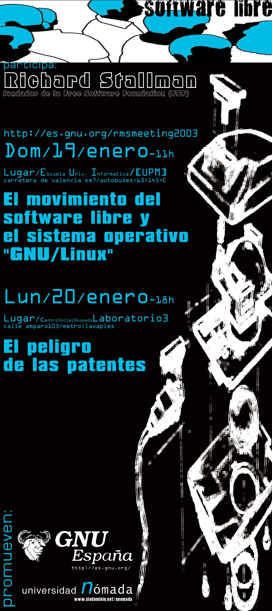

|  |
Conferencia en la EUI/UPMTítulo:El movimiento del Software Libre y el sistema operativo GNU/Linux Resumen:Richard Stallman hablará acerca de los motivos, objetivos, filosofía, métodos, situación actual y expectativas futuras del sistema operativo GNU, que en combinación con el kernel Linux se estima es utilizado por 17 a 20 millones de usuarios en todo el mundo. Fecha:Domingo 19Lugar:La conferencia se dará en la Escuela Universitaria de Informática de la Universidad Politécnica de Madrid. La EUI está situada en el Campus Sur de la UPM, en Vallecas villa. La dirección es: Escuela Universitaria de Informática (UPM). Campus Sur. Ctra. Valencia kilómetro 7. Como llegar:Utilizando Metro:
Utilizando Cercanías Renfe:
Programa:
Conferencia en el CSA "El Laboratorio-03"Título:Contra las Patentes de Software Resumen:Richard Stallman explicará como las patentes de software dificultan el desarrollo en el ámbito del software. Las patentes de software cubren ideas implementadas en software. Restringen el desarrollo de software, como se refleja en el hecho de que cualquier decisión de diseño implica un riesgo de ser demandado. Las patentes en otros ámbitos restringen a las factorías, pero las patentes de software restringen a todos los usuarios. Algunas investigaciones económicas revelan que incluso retardan el progreso. Fecha:Lunes 20Lugar:Centro Social Autogestionado El Laboratorio-03. La dirección es: C/ Amparo Nº 103. Como llegar:
Programa:
|
{kind=link}